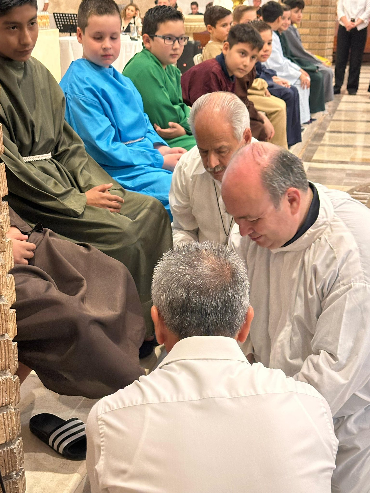
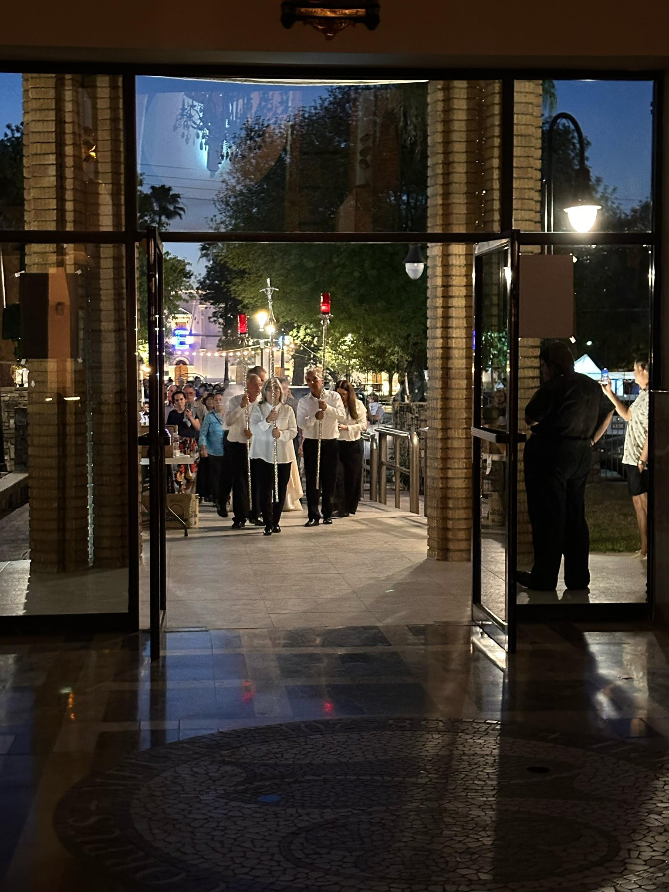
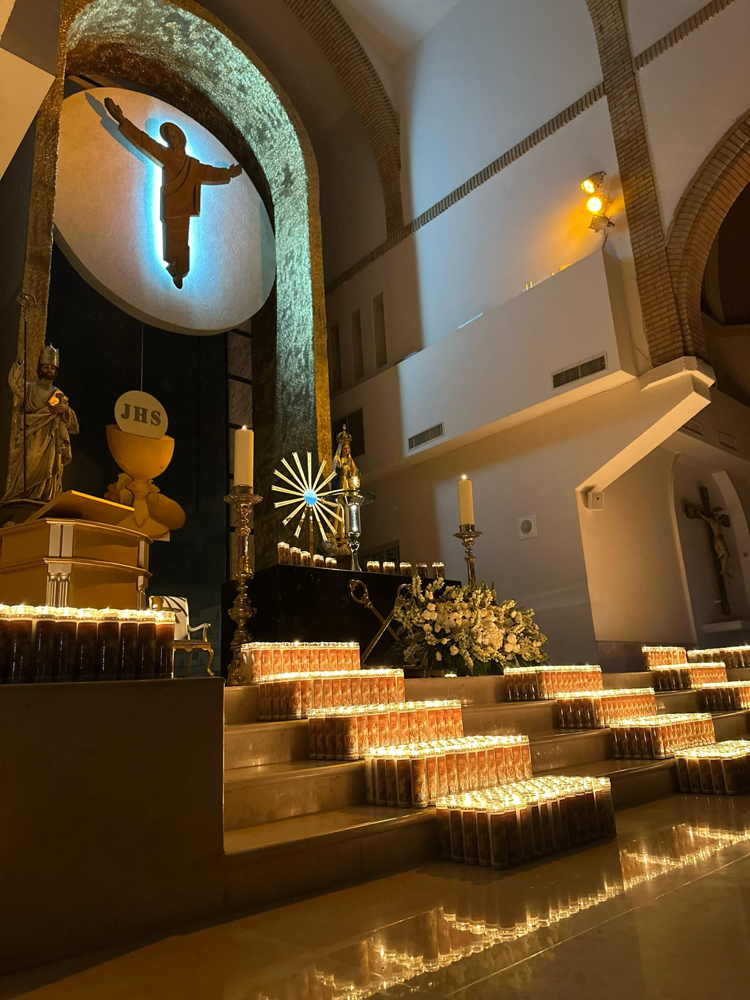
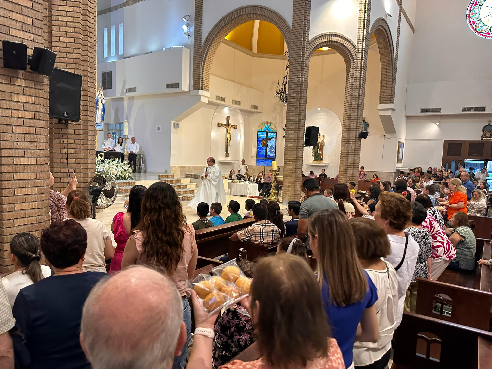
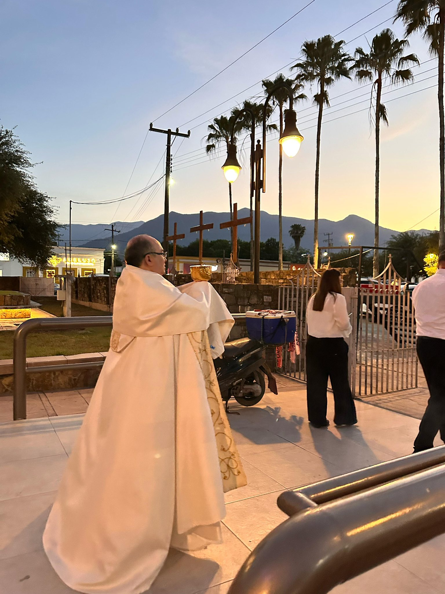
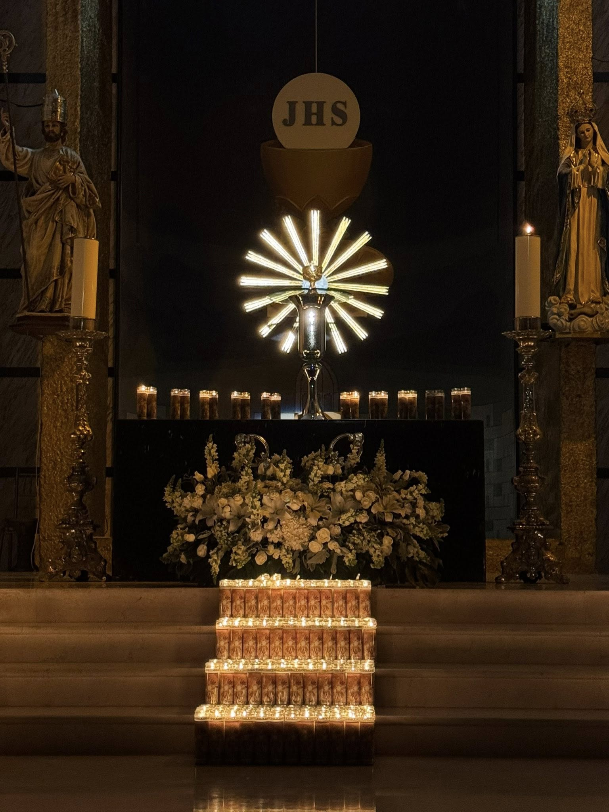

La Cena del Señor y el Lavatorio
El Jueves Santo no es un día más; con la Misa Vespertina, la Cuaresma concluye y la Iglesia entra en el "Hoy" eterno de la Pasión. Nos trasladamos espiritualmente al Cenáculo, donde Jesús instituye tres grandes misterios: la Eucaristía (su Cuerpo y Sangre como alimento), el Sacerdocio (quienes hacen posible el milagro) y el Mandamiento del Amor, expresado vivamente en el Lavatorio de los Pies.
Parroquia San Pedro (Allende)
Misa Vespertina: 6:00 PM
Adoración (Altar de Reposo): 7:30 PM - 10:00 PM
NO HAY misas matutinas este día.
Capilla San Judas Tadeo
Misa Vespertina: 6:00 PM
Adoración (Altar de Reposo): 6:30 PM - 9:00 PM
NO HAY misas matutinas este día.
Selecciona tu área para ver tareas detalladas.

Textos íntegros de las lecturas y oraciones para la celebración de la Cena del Señor.

Distribución de la Comunión y organización de la fila procesional hacia la plaza.

Asistencia en el Lavatorio de Pies, campanillas en el Gloria y uso del incienso en la procesión.

Proclamación de la institución de la Eucaristía y la Antigua Pascua.

Canto festivo en el Gloria y acompañamiento profundo durante el Lavatorio y el traslado.

Logística de los "12 apóstoles", reparto del Pan Bendito y orden en la Adoración.

Sagrario vacío al inicio, montaje del Altar de Reposo y preparación del Lavatorio de Pies.